Painting · Digital
Mental Obscurity
This piece uses intentionally distorted lighting, perspective, and proportion to evoke unease and a sense that something is off.
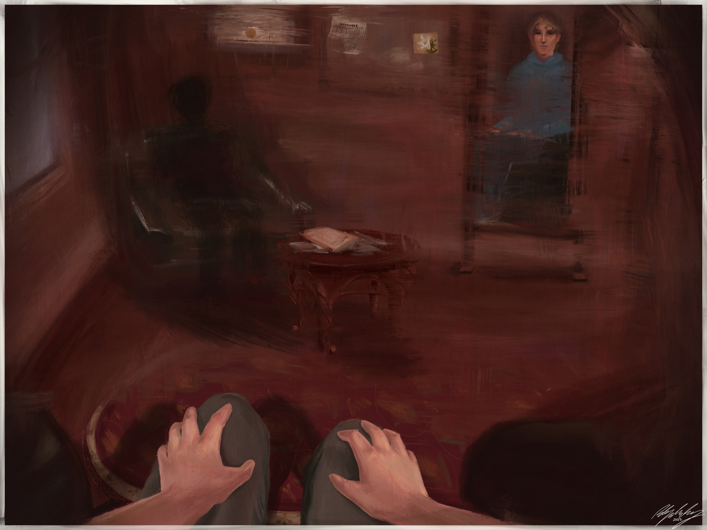
01
About the work
It draws from my personal experience with formal counseling, which felt unhelpful and alienating. In response, I turned inward—finding comfort, clarity, and expression through my own characters and narratives. The visual distortion mirrors the emotional dissonance I felt, as well as the healing I found outside traditional structures.
My therapy experience wasn’t positive; instead I use narratives to grapple with my experiences.
02
Sketchbook
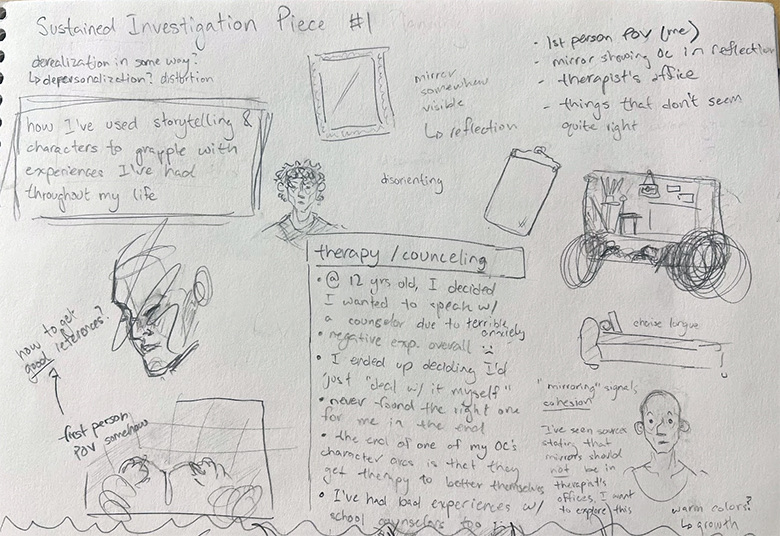
Notes 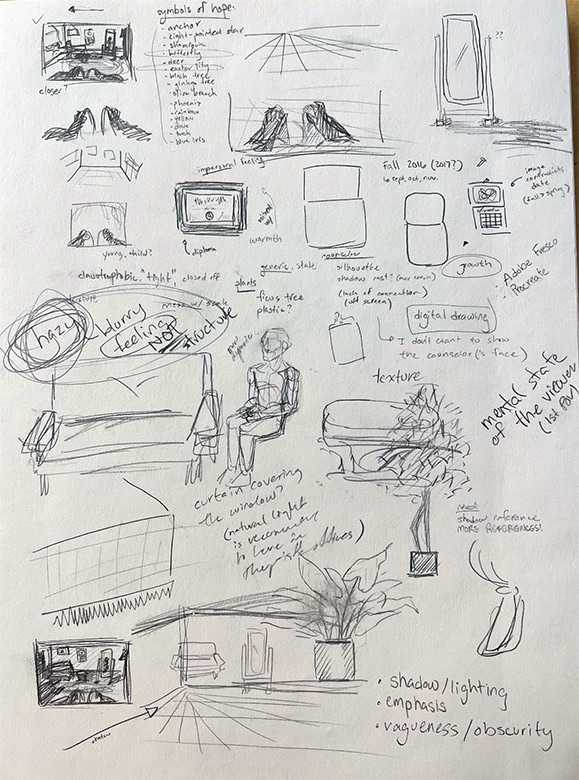
Room studies 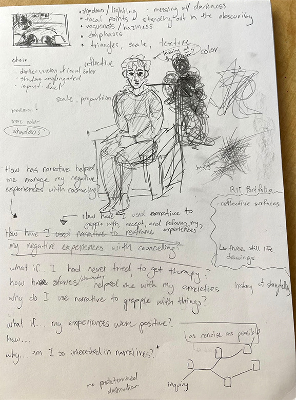
Figures and symbols
Research symbols of hope; experiment with composition and texture; use warm colors for discomfort.
03
The first version
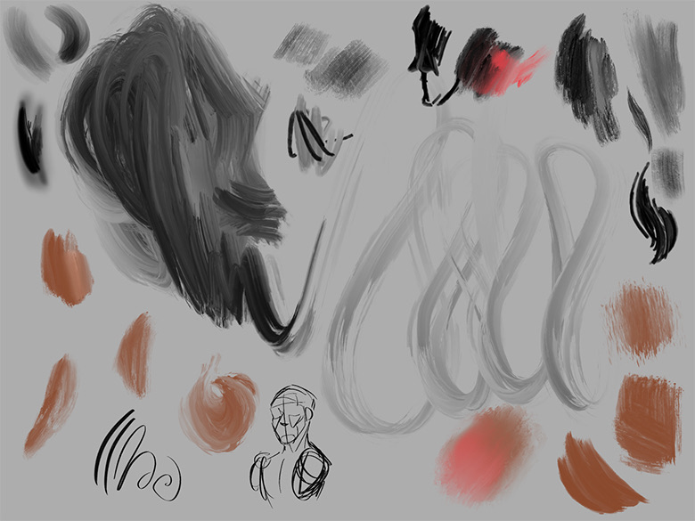
Swatches 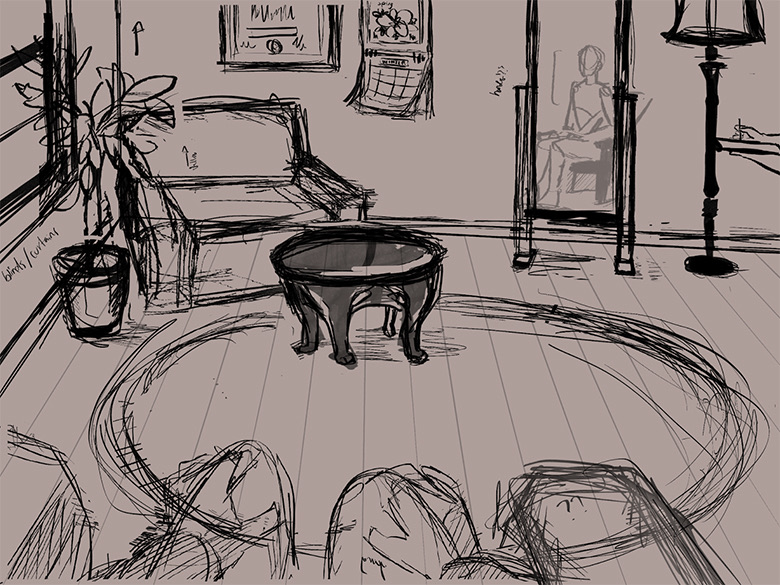
First sketch 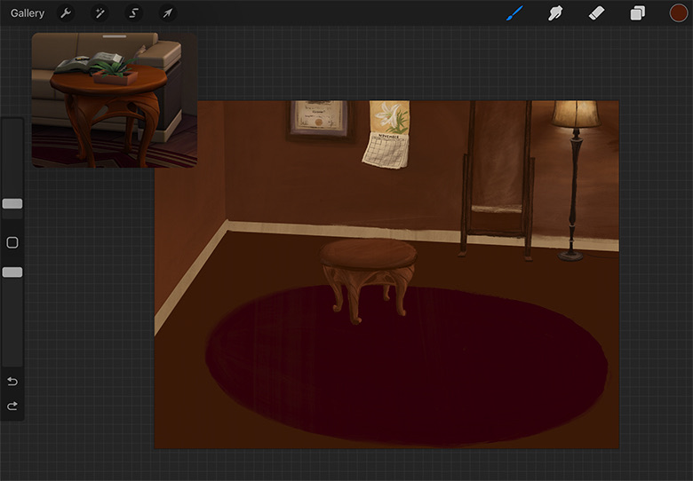
First colour 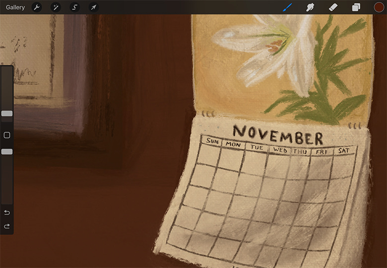
Calendar detail 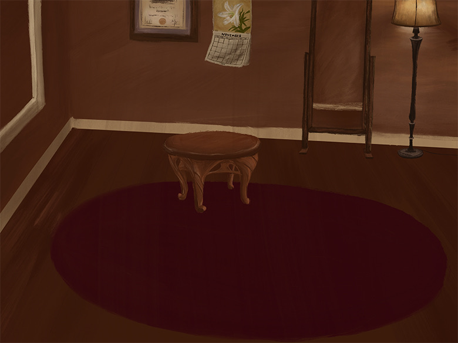
First version 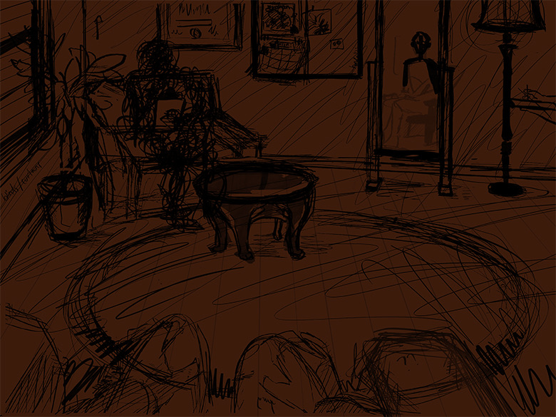
Starting over
Revisit sketch because piece felt too rigid; reevaluate colors and use of texture to create movement.
I completely reformed piece 1 to portray my message.
04
The reworked version
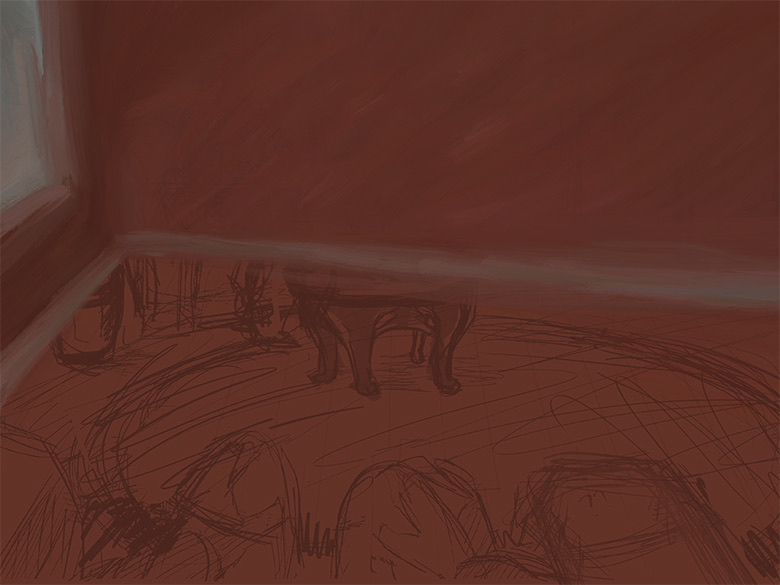
Distorting the room 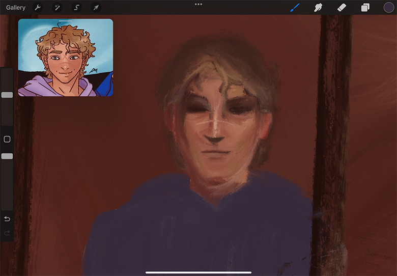
The portrait 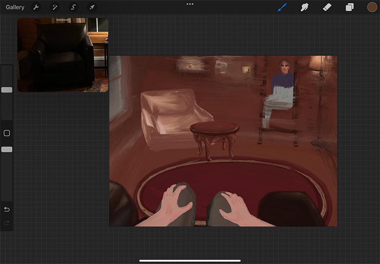
Hands and rug
I use distorted lighting and blur to aid discomfort and emphasis; incorporate my own symbols of hope.